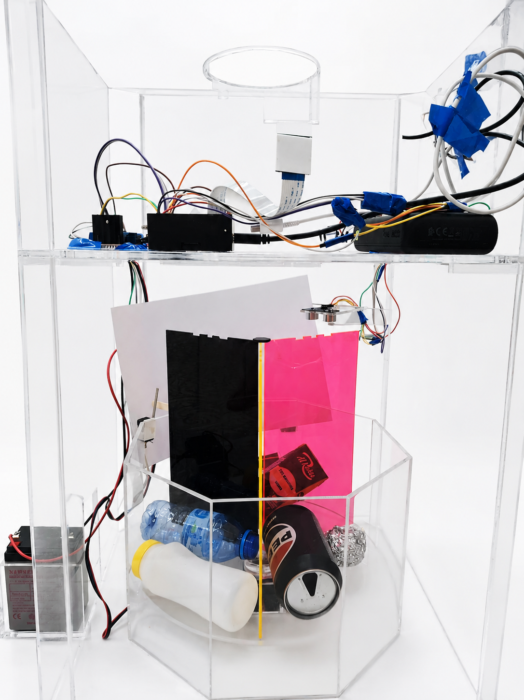
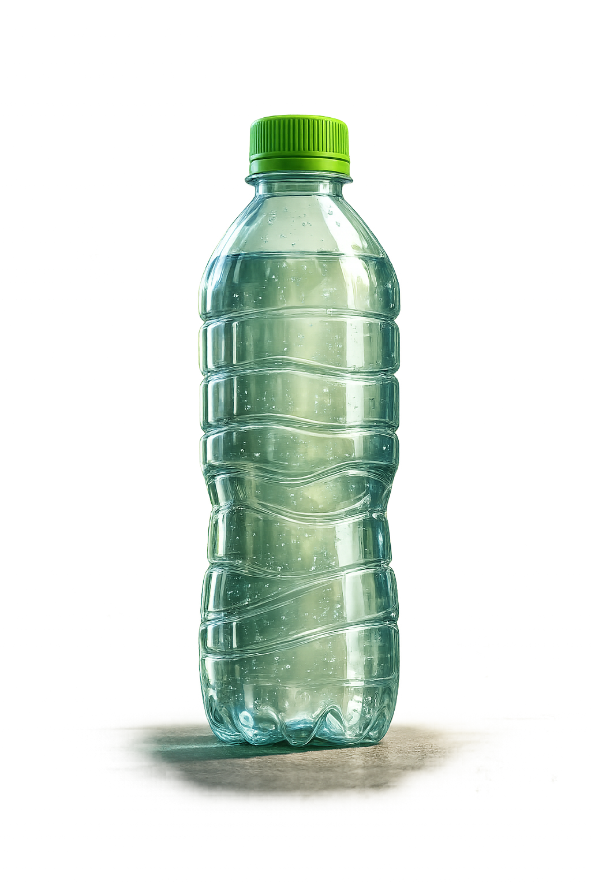
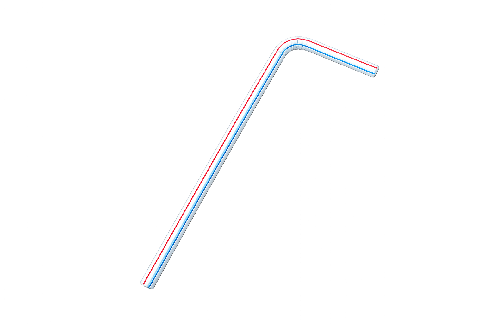
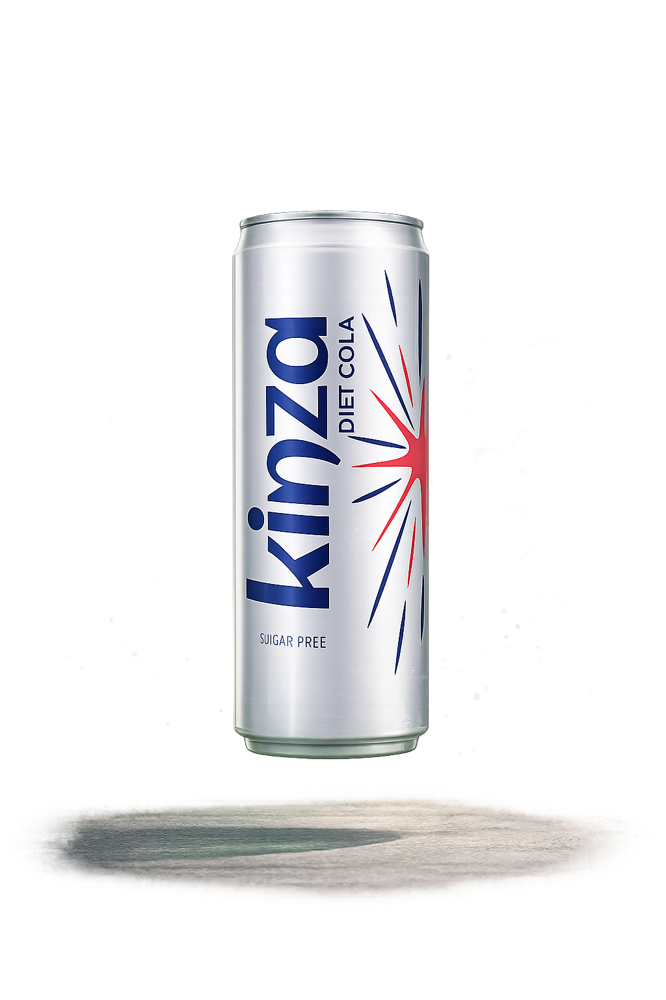
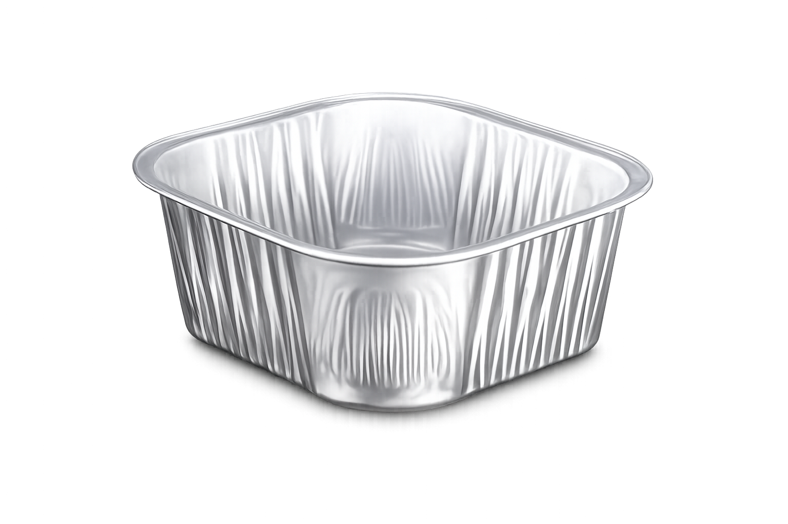
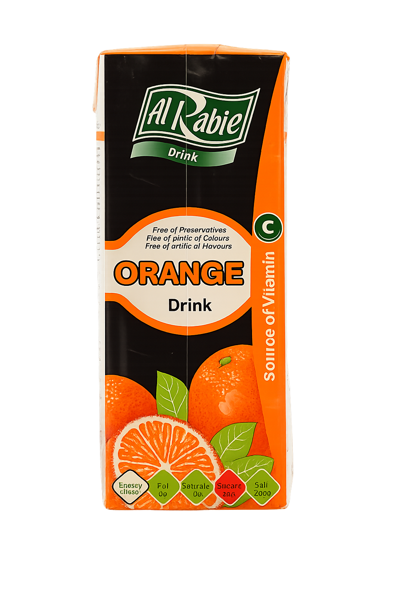

Incorrect waste sorting is one of the biggest environmental challenges affecting recycling efficiency worldwide. Large amounts of recyclable waste become contaminated due to human mistakes during waste disposal, causing more landfill pollution and environmental damage. Plastic waste burning also contributes to air pollution and ozone layer damage.
This project introduces an intelligent AI-driven recycling system that automatically classifies waste into paper, plastic, and metal categories using computer vision, IoT technologies, and automated mechanical control.
Discover MoreThe Smart Recycle Bin uses Artificial Intelligence and IoT technologies to automate waste sorting. The system uses a Raspberry Pi 4, camera module, ultrasonic sensors, servo motor, and stepper motor integrated with the YOLO11 object detection model.
When waste is placed into the system, the camera captures the object and the YOLO11 model classifies it as paper, plastic, or metal. The internal rotating mechanism then moves the correct compartment under the gate before automatically dropping the waste into the selected bin.
The system also checks the fill level of the selected compartment before opening the gate to prevent overflow and improve recycling efficiency.

Ultrasonic sensors detect when waste is placed near the system entrance.
The YOLO11 AI model analyzes the object and classifies it into paper, plastic, or metal.
The stepper motor rotates the correct compartment into position.
The servo motor opens the gate and drops the waste into the correct compartment.
Select a waste object below to test the AI detection model and mechanical sorting.

Plastic Bottle

Plastic Sucker

Soda Can

Aluminium Foil

Crumpled Paper

Juice Carton
The project uses Artificial Intelligence, IoT, Raspberry Pi 4, YOLO11 object detection, ultrasonic sensors, stepper motors, servo motors, Python.
The system currently supports paper, plastic, and metal waste classification.
Ultrasonic sensors detect nearby objects and trigger the camera to begin classification.
YOLO11 provides fast and accurate real-time object detection suitable for embedded AI systems.
The goal is to reduce human sorting errors, improve recycling efficiency, and support environmental sustainability using AI and IoT technologies.
PROJECT TEAM
Academic Supervisor
Team Member
Team Member
GET IN TOUCH
Discover how SMART RECYCLE BIN can support intelligent waste management and environmental sustainability through AI-driven recycling solutions. Whether you have questions, ideas, or collaboration opportunities, our team is ready to help.